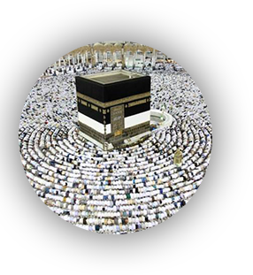

<ion-header>
  <ion-navbar>
    <div align="center"></div>
  <button ion-button icon-only menuToggle right>
        <ion-icon name="menu"></ion-icon>
      </button>
  </ion-navbar>

</ion-header>


<ion-content padding >
    <ion-slides pager> 
        <ion-slide> 
          
           <ion-grid>
   
  <ion-row>
    <ion-col col-lg-4 ><div><div></div><div><p class="roundimg">کلیات حج</p></div></div></ion-col>
    <ion-col col-lg-4 style="margin-top:5vh"></ion-col>
    <ion-col col-lg-4 ></ion-col>
  </ion-row>

  <ion-row>

  </ion-row>
</ion-grid>
</ion-slide>

<ion-slide>

</ion-slide>
    </ion-slides>
</ion-content>


       
      